Polymers 1
Topic 11.10 · Polymers Part 1
On this page
Introduction
Look around you: the bottle on your desk, the fibres in your shirt, the insulation on a cable, the non-stick coating on a pan. All of them are polymers. So are many of the molecules that keep you alive: proteins, starch, cellulose and DNA are natural polymers. Every one of them is a very long molecule built by joining many small molecules together, over and over.
Polymers are macromolecules: huge molecules, each held to its neighbours by intermolecular forces (id-id interactions, pd-pd interactions or hydrogen bonds). They are not giant covalent lattices like diamond (Topic 2 Part 3). This Part covers 9476 Topic 11.10: what a polymer is, the two ways polymers are made (addition and condensation), proteins as natural condensation polymers and their hydrolysis, why some plastics biodegrade and others do not, and why recycling matters. It ends with a map of all the organic reactions in Topics 11.4 to 11.10, which you will use to plan syntheses.
Key terms
You will use these terms throughout the Part.
| Term | Meaning |
|---|---|
| Monomer | A small molecule that can join to many others to form a polymer, e.g. ethene. |
| Polymer | A macromolecule made by joining many monomers; 9476 takes a polymer to have an average Mr of at least 1000, or at least 100 repeat units. |
| Repeat unit | The smallest part of the chain that repeats over and over; written in square brackets with n. |
| Degree of polymerisation, n | The number of repeat units in a chain; for a sample, an average. |
| Addition polymerisation | Monomers with a C=C bond join together; nothing is lost. |
| Condensation polymerisation | Monomers with two reactive groups join, losing a small molecule (H2O or HCl) at every link. |
| Polyester | A condensation polymer whose monomers are joined by ester links, ‑COO‑. |
| Polyamide | A condensation polymer whose monomers are joined by amide links, ‑CONH‑. |
| Peptide bond | The amide link, ‑CO‑NH‑, between two amino acids in a peptide or protein. |
| Hydrolysis | Breaking a bond by reaction with water, often with acid or alkali. |
| Biodegradable | Broken down by living organisms (bacteria, fungi and their enzymes) into small molecules in the environment. |
Polymers and monomers
Poly(ethene) is made from ethene. Each ethene molecule becomes two CH2 groups in a chain that is thousands of carbon atoms long. The part of the chain that came from one monomer and repeats over and over is the repeat unit. To save drawing thousands of atoms, we write one repeat unit in square brackets with a subscript n, the number of repeat units. The bonds drawn through the brackets are continuation bonds: they show that the chain carries on at both ends.
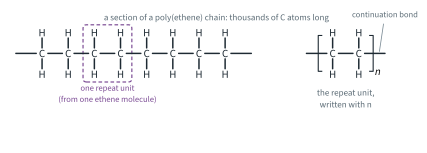
The chains in a sample are not all the same length: polymerisation starts and stops at random, so a sample contains chains of many lengths. So Mr and n for a polymer are always averages.
Worked example 1
A sample of poly(ethene) has an average relative molecular mass of 1.40 × 105. Calculate the average number of repeat units in a chain, and show that it is a polymer by the 9476 definition. (Ar: H 1.0, C 12.0.)
(To find n, you need the Mr of the repeat unit. The end groups of such a long chain make no difference.)
Mr of –CH2–CH2– = 2(12.0) + 4(1.0) = 28.0
n = (average Mr of polymer) / (Mr of repeat unit) = (1.40 × 105) / 28.0 = 5.00 × 103
5.00 × 103 repeat units (more than 100) and an average Mr of 1.40 × 105 (more than 1000): poly(ethene) is a polymer by either test.
Addition polymerisation
How an alkene polymerises
In addition polymerisation, the π bond of each C=C opens and the monomers join end to end into a long chain of carbon atoms. No atoms are lost, so the polymer has the same empirical formula as its monomer. The usual monomers are alkenes, so the products are called poly(alkenes). The conditions differ from polymer to polymer and are not required by 9476.
n CH2=CH2 → –[CH2–CH2]n–
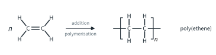
Drawing the repeat unit
- Draw the two carbon atoms of the C=C, now joined by a single bond.
- Put the atoms or groups that were on those carbons above and below them, exactly as in the monomer.
- Draw a continuation bond out of each end, put square brackets across the two continuation bonds, and write n at the bottom right.
- Check: the repeat unit has the same atoms as the monomer.
Worked example 2
(a) Draw a section of poly(propene) containing three repeat units, and the repeat unit. (b) A section of a polymer chain is –CH2–CHCl–CH2–CHCl–CH2–CHCl–. Identify and name the monomer.
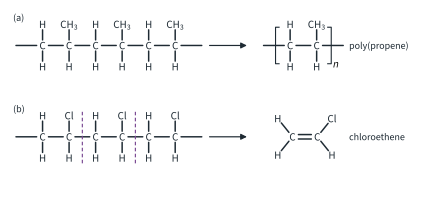
(a) Each propene contributes CH2–CH(CH3): the CH3 groups hang off alternate carbon atoms, not every one. (b) The backbone of an addition polymer contains only carbon. Cut it into two-carbon units: each unit is CH2–CHCl, so the monomer is CH2=CHCl, chloroethene, and the polymer is poly(chloroethene).
Five poly(alkenes)
These five addition polymers are made in millions of tonnes a year. Learn to draw each repeat unit from its monomer, and the reverse.
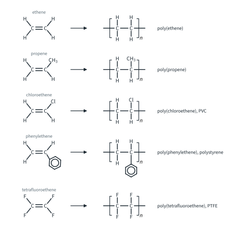
| Monomer | Polymer (other name) | Typical uses (literature) | Resin code (beyond the syllabus) |
|---|---|---|---|
| ethene, CH2=CH2 | poly(ethene) (polyethylene, PE: LDPE and HDPE) | carrier bags, films, bottles, food containers | 4 (LDPE), 2 (HDPE) |
| propene, CH2=CHCH3 | poly(propene) (polypropylene, PP) | food tubs, bottle caps, ropes, syringe barrels | 5 |
| chloroethene, CH2=CHCl | poly(chloroethene) (PVC) | rigid: water pipes, window frames; plasticised: cable insulation, flexible tubing | 3 |
| phenylethene, CH2=CHC6H5 | poly(phenylethene) (polystyrene, PS) | expanded foam packaging and insulation, disposable cups | 6 |
| tetrafluoroethene, CF2=CF2 | poly(tetrafluoroethene) (PTFE) | non-stick coatings, seals, gaskets, plumber's tape | 7 (other) |
(The resin code is the number in the recycling triangle on packaging: Enrichment, beyond the syllabus; see the section on recycling.)
Additives
Condensation polymerisation
In condensation polymerisation, each monomer has two reactive functional groups (it is bifunctional). Two different monomers usually take turns along the chain, and every time a link forms, a small molecule is lost: H2O, or HCl if one monomer is an acyl chloride. (A single monomer that carries both kinds of group, such as an amino acid, works too.) The links are the ester and amide links you know from Topics 11.8 and 11.9.
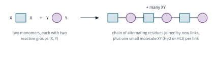
Polyesters: PET
A diol and a dicarboxylic acid form an ester link at each end, as ethanol and ethanoic acid do in Topic 11.8 Part 1 (the same reaction as an equilibrium is in Topic 9 Part 1). The best-known polyester is PET, poly(ethylene terephthalate), made from ethane-1,2-diol and benzene-1,4-dicarboxylic acid by heating with a catalyst. Water is driven off as the chain grows.
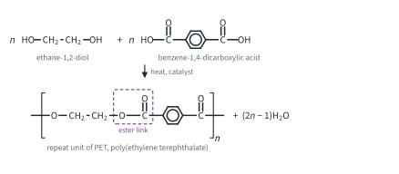
n HOCH2CH2OH + n HOOC–C6H4–COOH → H–[OCH2CH2O–CO–C6H4–CO]n–OH + (2n − 1)H2O
A chain made from n of each monomer has 2n − 1 links, so (2n − 1) molecules of water are lost, which for a long chain is practically 2n. The repeat unit contains one residue of each monomer: its Mr is 62.0 + 166.0 − 2(18.0) = 192.0. PET is used for drinks bottles and food trays, and spun into fibre as polyester fabric.
Poly(lactic acid), PLA
2-Hydroxypropanoic acid (lactic acid) has an –OH and a –COOH group in the same molecule, so it can condense with itself: the –OH of one molecule forms an ester link with the –COOH of the next. PLA is made from plant sugars (a renewable feedstock) and is used for compostable cups and packaging, 3D-printing filament and dissolving stitches. Lactic acid has a chiral centre (Topic 11.2).
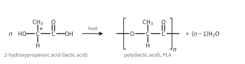
Polyamides: nylon-6,6
A diamine and a dicarboxylic acid form an amide link at each end. Nylon-6,6 is made from hexane-1,6-diamine and hexanedioic acid by heating, with loss of water. It can also be made from the diamine and hexanedioyl dichloride: acyl chlorides are far more reactive than carboxylic acids (Topic 11.8 Part 2), so this reaction is fast at room temperature, and HCl is lost instead of water. The name 6,6 says that each monomer has 6 carbon atoms (the diamine first, then the diacid).
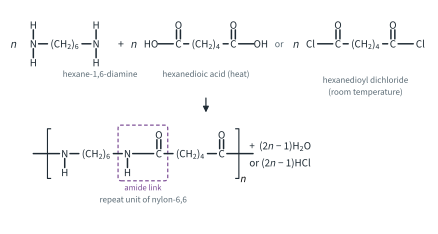
n H2N(CH2)6NH2 + n HOOC(CH2)4COOH → H–[NH(CH2)6NH–CO(CH2)4CO]n–OH + (2n − 1)H2O
n H2N(CH2)6NH2 + n ClOC(CH2)4COCl → H–[NH(CH2)6NH–CO(CH2)4CO]n–Cl + (2n − 1)HCl
The repeat unit, C12H22N2O2, has Mr 226.0 by either route: 116.0 + 146.0 − 2(18.0) = 116.0 + 183.0 − 2(36.5) = 226.0. Nylon is used for fibres, ropes and carpets, and for engineering parts such as gears and cable ties.
Further example: why nylon fibres are strong. The N–H of each amide link in one chain can hydrogen-bond to the C=O of an amide link in the next chain (Topic 2 Part 3). Poly(ethene) chains are held together only by id-id interactions, so nylon fibres are much stronger and have a higher melting point.
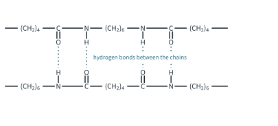
Finding the monomers
To work backwards from a condensation polymer, “hydrolyse it on paper”:
- Find every ester (–CO–O–) or amide (–CO–NH–) link in the chain.
- Break the bond between the C=O carbon and the O or N.
- Add –OH to the C=O side (making –COOH) and –H to the O or N side (making –OH or –NH2). This is the same as adding H2O across each link. (If the question asks for an acyl chloride monomer, put –Cl on the C=O side instead.)
Worked example 3
A section of a polyester chain is shown in Fig 10. Deduce the monomers.
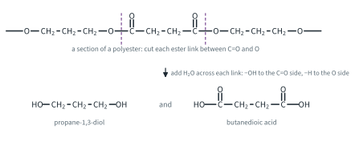
(Look for the ester links first: there are two in this section.) Cutting each link between the C=O and the O, and adding –OH and –H, gives HO–CH2CH2CH2–OH, propane-1,3-diol, and HOOC–CH2CH2–COOH, butanedioic acid. The polymer is a condensation polymer (a polyester); water is lost at each link. Its repeat unit is –[O(CH2)3O–CO(CH2)2CO]–, C7H10O4, Mr 76.0 + 118.0 − 2(18.0) = 158.0.
Worked example 4
For nylon-6,6: draw the repeat unit, name the link and state the small molecule lost when it is made (a) from hexanedioic acid, (b) from hexanedioyl dichloride.
The repeat unit is –[NH(CH2)6NH–CO(CH2)4CO]– (Fig 8), with an amide link, –CO–NH–, at each end of the diacid residue. (a) H2O is lost at each link. (b) HCl is lost at each link. The repeat unit is the same either way: only the small molecule changes.
Addition or condensation?
The table sums up the difference.2
| Addition polymerisation | Condensation polymerisation | |
|---|---|---|
| Monomer | contains a C=C bond | has two functional groups that react with each other's (–OH, –COOH, –COCl, –NH2) |
| Number of monomers | usually one | usually two different monomers (or one with two different groups) |
| Small molecule lost | none | one per link: H2O (or HCl from an acyl chloride) |
| Repeat unit against monomer | same atoms (same empirical formula) | monomers minus the small molecules |
| Backbone | carbon atoms only | contains O (ester) or N (amide) atoms as well as C |
| Link | C–C | ester ‑COO‑ or amide ‑CONH‑ |
| Examples | poly(ethene), poly(propene), PVC, polystyrene, PTFE | PET, PLA (polyesters); nylon-6,6, proteins (polyamides) |
| Hydrolysable? | no (inert; see Biodegradability) | yes (see Biodegradability) |
Proteins
Proteins are natural condensation polymers. Their monomers are 2-amino acids (α-amino acids): the –NH2 and –COOH groups are on the same carbon atom, the α carbon, which also carries a hydrogen atom and a side chain, R. About 20 different R groups are found in proteins. Every amino acid except glycine has a chiral centre, and natural proteins use the L forms (Topic 11.2).
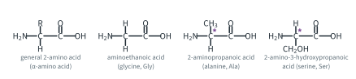
(In the solid, and in water near pH 6, amino acids exist as zwitterions, +H3NCH(R)COO−: Topic 11.9 Part 2. The neutral form is drawn here because it makes the condensation easy to follow.)
The peptide bond
Two amino acids give a dipeptide, three a tripeptide, many a polypeptide. Glycine and alanine can join in two ways, because either one can use its –COOH group. By convention, peptides are written from the end with the free –NH2 (on the left) to the end with the free –COOH (on the right), so Gly-Ala and Ala-Gly are different compounds, constitutional isomers of formula C5H10N2O3.
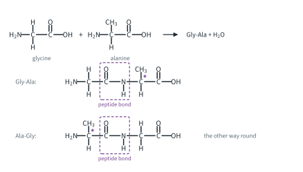
H2NCH2COOH + H2NCH(CH3)COOH → H2NCH2CO–NHCH(CH3)COOH + H2O
Worked example 5
Draw the tripeptide Gly-Ala-Ser. Mark the peptide bonds and the chiral centres. How many different tripeptides can be made from glycine, alanine and serine if each is used once?
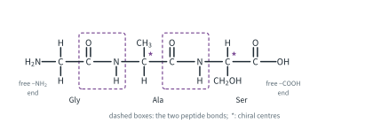
Gly-Ala-Ser is H2NCH2CO–NHCH(CH3)CO–NHCH(CH2OH)COOH, C8H15N3O5, Mr 75.0 + 89.0 + 105.0 − 2(18.0) = 233.0. It has 2 peptide bonds (three residues, two links) and 2 chiral centres (the α carbons of alanine and serine; glycine's α carbon carries two H atoms). The first position can be any of 3 amino acids, the second either of the 2 left, the third the last one: 3 × 2 × 1 = 6 tripeptides. If an amino acid may be used more than once, there are 3 × 3 × 3 = 27.
With 20 amino acids and chains of hundreds of residues, the number of possible proteins is enormous. Each protein's properties are set by its sequence.3 Cells make proteins by condensation on ribosomes, with enzymes, at body temperature; this is not done directly in the laboratory. Nylon and proteins are both polyamides: the link is the same.
Hydrolysis of proteins
Proteins are hydrolysed by heating with aqueous acid or aqueous alkali: dilute HCl(aq), heat under reflux, or NaOH(aq), heat under reflux.4 In digestion the same hydrolysis is done at body temperature by enzymes called proteases (Topic 8 Part 2). Every peptide bond is broken: the C–N bond of each –CO–NH– link breaks, –OH goes to the C=O side and –H to the N side, as for the amides in Topic 11.9 Part 2. Then the acid or alkali reacts with the amino acids as they form:
- In acid, the –NH2 groups are protonated: the products are the amino acids as their ammonium salts (cations), +H3NCH(R)COOH, with Cl−.
- In alkali, the –COOH groups are deprotonated: the products are the amino acids as their carboxylate salts (anions), H2NCH(R)COO−, with Na+.
Worked example 6
Give the products and the equations for the hydrolysis of Gly-Ala-Ser by (a) dilute HCl(aq), heat under reflux, (b) NaOH(aq), heat under reflux.
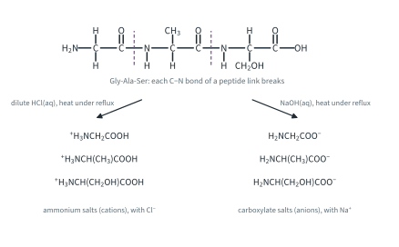
(a) Two peptide bonds take two H2O; the three –NH2 groups then take three H+:
Gly-Ala-Ser + 2H2O + 3H+ → +H3NCH2COOH + +H3NCH(CH3)COOH + +H3NCH(CH2OH)COOH
(b) Two OH− hydrolyse the two peptide bonds, giving two carboxylates; the third OH− neutralises the free –COOH at the end of the chain, which gives the one H2O:
Gly-Ala-Ser + 3OH− → H2NCH2COO− + H2NCH(CH3)COO− + H2NCH(CH2OH)COO− + H2O
or Gly-Ala-Ser + 3NaOH → H2NCH2COONa + H2NCH(CH3)COONa + H2NCH(CH2OH)COONa + H2O
The –CH2OH of serine is not changed by either reagent. Further example: no bond to a chiral centre is broken (only the C–N bonds of the peptide links), so L-alanine and L-serine come out with their configuration unchanged.
Biodegradability
A biodegradable material is broken down by living organisms (bacteria, fungi and their enzymes) into small molecules. For polymers, this starts with breaking the links in the chain, and the links that can be broken are the ones that can be hydrolysed.
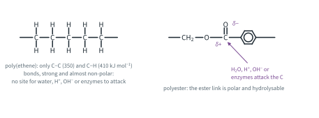
Poly(alkenes) are chemically inert
The backbone of a poly(alkene) is a chain of C–C bonds with C–H bonds along it, just like an alkane (Topic 11.3). These bonds are strong (C–C 350, C–H 410 kJ mol−1, Data Booklet) and almost non-polar, so there is no δ+ or δ− site for water, H+, OH− or an enzyme to attack, and the water-repelling chains do not let water in. Poly(alkenes) are chemically inert, and therefore hard to biodegrade. A poly(ethene) bag can persist for hundreds of years (literature estimates vary widely). PTFE is even more inert: C–F (485 kJ mol−1) is the strongest single bond to carbon in the Data Booklet, and the fluorine atoms shield the backbone. In PVC the C–Cl bonds are polar, but in the solid, water-repelling plastic they are not hydrolysed at any useful rate; and PVC gives off HCl when it is burned or strongly heated.5
Polyesters and polyamides can be hydrolysed
The ester and amide links have a polar C=O, so the carbonyl carbon is δ+. Water, acid, alkali and enzymes (esterases, proteases) can attack it and break the link, exactly as in the hydrolysis of esters (Topic 11.8 Part 2) and amides (Topic 11.9 Part 2). So polyesters and polyamides are generally biodegradable by hydrolysis. “Generally” matters: how fast depends on the polymer. Proteins are hydrolysed readily by enzymes. PLA breaks down in industrial composting (warm and moist) in weeks to months, but far more slowly in soil or the sea. PET and nylon-6,6 are hydrolysable, but outdoors they break down very slowly (decades or longer; literature estimates vary): the chains are water-repelling and closely packed, PET's ester links sit beside rigid benzene rings, and nylon's chains are held together by hydrogen bonds.
| Polymer | Link in the chain | Biodegradable? |
|---|---|---|
| poly(ethene), poly(propene) | none: C–C and C–H only | no: inert |
| poly(chloroethene), PVC | C–C backbone with C–Cl | no |
| PTFE | C–C backbone with C–F | no: one of the most inert polymers |
| PET | ester | by hydrolysis, very slowly |
| nylon-6,6 | amide | by hydrolysis, very slowly |
| PLA | ester | by hydrolysis (composts) |
| protein | peptide (amide) | by hydrolysis (enzymes), readily |
Materials are finite: recycling plastics
Most plastics are made from crude oil and natural gas, which are finite: they are not replaced on any human timescale. Every plastic item thrown away wastes some of that material, and a poly(alkene) that is not collected stays in the environment, much of it breaking up into microplastics. Bio-based polymers such as PLA are made from plants, a renewable feedstock. What can be done with plastic waste is often shown as a hierarchy, from the best option to the worst:
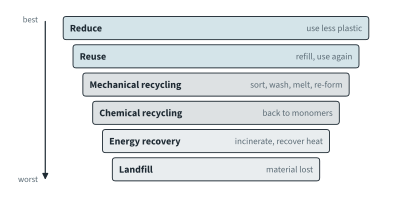
Whether recycling is worth doing depends on several kinds of factor:
| Economic | Environmental | Social |
|---|---|---|
| Collecting, sorting and cleaning mixed plastic waste costs money and energy. Recycled resin competes on price with new polymer, so recycling pays best when oil is expensive and the waste is clean and of one type (PET bottles, HDPE milk bottles). Chemical recycling plants are expensive to build. Landfill and incineration have costs too (land, fees, ash disposal). | Recycling saves finite crude oil and the energy and CO2 of making new polymer, and keeps plastic out of landfill and the sea. But collection and reprocessing use energy and water. Incineration recovers energy but releases CO2, and HCl from PVC, which must be removed from the flue gas. Landfill wastes the material and the land. | Recycling depends on people sorting their waste and on collection schemes being available. It creates jobs. It changes what packaging people accept. Single-use plastics bring hygiene and convenience, especially in medicine, which is why they are hard to replace. |
To be recycled, plastics must be sorted by type.
Mechanical recycling sorts, washes and shreds the plastic into flakes, then melts and re-forms it. It is cheap and common, but each melting shortens the chains (the average Mr falls), and other plastics, labels and dirt contaminate it, so the recycled polymer is often of lower quality and goes into a lower-value product (downcycling: PET bottles into fibre, for example). A little PVC mixed into PET gives off HCl when the PET is melted and spoils it. Chemical recycling breaks the polymer back into monomers or short chains, which are purified and repolymerised (In industry box below). It works best for polyesters and polyamides, because their links can be broken.
The organic reaction map
Topics 11.4 to 11.10 contain about sixty reactions. The map below puts them together so that you can plan a synthesis: a route from a starting compound to a target, one step at a time. Each arrow carries a row number; the table after the figures gives the reagents and conditions for every row, in the same words as the topic that teaches it. A few tips:
- Work backwards from the target: which functional group could you make it from, and what could you make that from?
- Count the carbon atoms. Most reactions on the map keep the carbon skeleton. The exceptions: KCN (row 14) and HCN (row 30) add one carbon atom; hot, acidified KMnO4 (row 7) and the tri-iodomethane reaction (rows 23 and 33) remove carbon atoms; the Friedel-Crafts reaction (row 10) adds an alkyl group; and wherever two molecules join (rows 38 and 42 to 44, and the polymerisations, rows 57 to 60) or one splits into two (rows 45 to 47, 54, 55 and the hydrolyses of polymers, rows 61 to 63) the carbon skeleton is not the same before and after.
- Check that the conditions leave other groups alone. H2(g) with a Ni catalyst reduces C=C as well as C=O; LiAlH4 does not reduce an isolated C=C.
- A condensation polymer needs two functional groups on each monomer. On the map, polymers are made only from diols, dicarboxylic acids, hydroxy acids, diamines, diacyl dichlorides and amino acids.
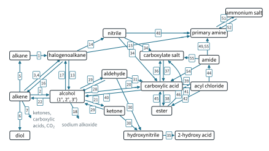
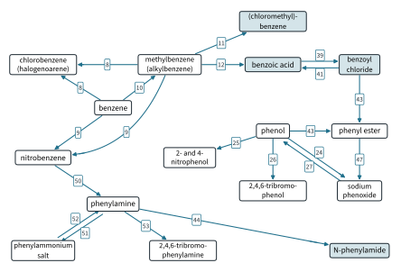
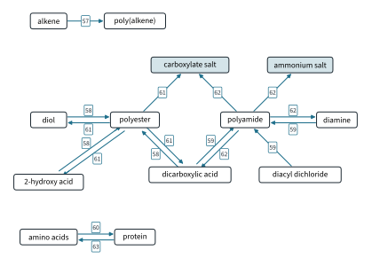
The summary table: every reaction on the map, by the topic that teaches it.6
| Row | From → to | Reagents and conditions | Type of reaction | Taught in |
|---|---|---|---|---|
| 1 | alkane → halogenoalkane | Cl2 or Br2, UV light, room temperature | free-radical substitution | Topic 11.4 Part 1 |
| 2 | alkene → alcohol | steam, H3PO4 catalyst | electrophilic addition | Topic 11.4 Part 1 |
| 3 | alkene → halogenoalkane | HX(g), room temperature | electrophilic addition (Markovnikov's rule) | Topic 11.4 Part 1 |
| 4 | alkene → 1,2-dihalogenoalkane | X2 in CCl4, room temperature, in the dark | electrophilic addition | Topic 11.4 Part 1 |
| 5 | alkene → alkane | H2(g), Ni catalyst, heat | reduction (catalytic hydrogenation) | Topic 11.4 Part 1 |
| 6 | alkene → diol | cold, alkaline KMnO4 | oxidation | Topic 11.4 Part 1 |
| 7 | alkene → ketones, carboxylic acids and CO2 | hot, acidified KMnO4 | oxidation (C=C cleaved) | Topic 11.4 Part 1 |
| 8 | benzene → halogenoarene | Cl2, AlCl3 catalyst, room temperature (or Br2, AlBr3 catalyst, room temperature) | electrophilic substitution | Topic 11.4 Part 2 |
| 9 | benzene → nitroarene | concentrated HNO3 and concentrated H2SO4, 50 °C (methylbenzene: 30 °C) | electrophilic substitution (nitration) | Topic 11.4 Part 2 |
| 10 | benzene → alkylbenzene | halogenoalkane, AlCl3 catalyst | electrophilic substitution (Friedel-Crafts alkylation) | Topic 11.4 Part 2 |
| 11 | methylbenzene → (chloromethyl)benzene | Cl2 or Br2, UV light, room temperature | free-radical substitution (side chain) | Topic 11.4 Part 2 |
| 12 | methylbenzene → benzoic acid | hot, acidified KMnO4; or hot, alkaline KMnO4, then dilute acid | oxidation (side chain) | Topic 11.4 Part 2 |
| 13 | halogenoalkane → alcohol | NaOH(aq), heat | nucleophilic substitution (hydrolysis) | Topic 11.5 |
| 14 | halogenoalkane → nitrile | KCN in ethanol, heat | nucleophilic substitution | Topic 11.5 |
| 15 | halogenoalkane → primary amine | excess NH3 in ethanol, heat in a sealed tube | nucleophilic substitution | Topic 11.5 |
| 16 | halogenoalkane → alkene | NaOH in ethanol, heat | elimination | Topic 11.5 |
| 17 | alcohol → halogenoalkane | HX, heat; or PCl5, room temperature | nucleophilic substitution | Topic 11.6 Part 1 |
| 18 | alcohol → sodium alkoxide | Na, room temperature | redox (effervescence of H2) | Topic 11.6 Part 1 |
| 19 | primary alcohol → aldehyde | acidified K2Cr2O7, heat with distillation | oxidation | Topic 11.6 Part 1 |
| 20 | primary alcohol → carboxylic acid | acidified K2Cr2O7, heat under reflux; or acidified KMnO4, heat under reflux | oxidation | Topic 11.6 Part 1 |
| 21 | secondary alcohol → ketone | acidified K2Cr2O7, heat | oxidation | Topic 11.6 Part 1 |
| 22 | alcohol → alkene | concentrated H3PO4 catalyst, heat | elimination (dehydration) | Topic 11.6 Part 1 |
| 23 | alcohol with CH3CH(OH)– → carboxylate salt (one carbon fewer) and CHI3 | warm alkaline aqueous iodine | oxidation (tri-iodomethane test; pale yellow precipitate) | Topic 11.6 Part 1 |
| 24 | phenol → sodium phenoxide | NaOH(aq), room temperature; or Na (phenol warmed until molten) | acid-base (NaOH); redox (Na) | Topic 11.6 Part 2 |
| 25 | phenol → 2-nitrophenol and 4-nitrophenol | dilute HNO3, room temperature | electrophilic substitution | Topic 11.6 Part 2 |
| 26 | phenol → 2,4,6-tribromophenol | Br2(aq) (bromine water), room temperature, no catalyst | electrophilic substitution | Topic 11.6 Part 2 |
| 27 | sodium phenoxide → phenol | dilute HCl(aq) | acid-base | Topic 11.6 Part 2 |
| 28 | aldehyde → primary alcohol | LiAlH4 in dry ether; or H2(g), Ni catalyst, heat | reduction | Topic 11.7 |
| 29 | ketone → secondary alcohol | LiAlH4 in dry ether; or H2(g), Ni catalyst, heat | reduction | Topic 11.7 |
| 30 | aldehyde or ketone → hydroxynitrile | HCN, with KCN as catalyst | nucleophilic addition | Topic 11.7 |
| 31 | aldehyde → carboxylic acid | acidified K2Cr2O7, heat under reflux; or acidified KMnO4, heat under reflux | oxidation | Topic 11.7 |
| 32 | aldehyde → carboxylate | Tollens' reagent, warm (silver mirror); or Fehling's solution, warm (brick-red precipitate of Cu2O; aliphatic aldehydes only) | oxidation (tests for aldehydes) | Topic 11.7 |
| 33 | compound with CH3CO– → carboxylate salt (one carbon fewer) and CHI3 | warm alkaline aqueous iodine | oxidation (tri-iodomethane test; pale yellow precipitate) | Topic 11.7 |
| 34 | nitrile → carboxylic acid | dilute HCl(aq), heat under reflux; or NaOH(aq), heat under reflux, then acidify with dilute HCl(aq) | hydrolysis | Topic 11.8 Part 1 |
| 35 | hydroxynitrile → 2-hydroxycarboxylic acid | dilute HCl(aq), heat under reflux | hydrolysis | Topic 11.8 Part 1 |
| 36 | carboxylic acid → carboxylate salt | Na or Mg, room temperature; NaOH(aq), room temperature; Na2CO3(aq) or NaHCO3(aq), room temperature | redox (metals, H2 given off); acid-base (alkalis; carbonates give off CO2) | Topic 11.8 Part 1 |
| 37 | carboxylate salt → carboxylic acid | acidify with dilute HCl(aq) | acid-base | Topic 11.8 Part 1 |
| 38 | carboxylic acid → ester | alcohol, concentrated H2SO4, heat under reflux | condensation (esterification; reversible) | Topic 11.8 Part 1 |
| 39 | carboxylic acid → acyl chloride | PCl5, room temperature | substitution | Topic 11.8 Part 1 |
| 40 | carboxylic acid → primary alcohol | LiAlH4 in dry ether | reduction | Topic 11.8 Part 1 |
| 41 | acyl chloride → carboxylic acid | water, room temperature | hydrolysis (steamy fumes of HCl) | Topic 11.8 Part 2 |
| 42 | acyl chloride → ester | alcohol, room temperature | condensation | Topic 11.8 Part 2 |
| 43 | acyl chloride → phenyl ester | phenol in NaOH(aq), room temperature (the phenoxide ion is the better nucleophile) | condensation | Topic 11.8 Part 2 |
| 44 | acyl chloride → amide | concentrated NH3(aq) or a primary amine (e.g. ethylamine, as an aqueous or ethanolic solution), room temperature | condensation | Topic 11.8 Part 2 |
| 45 | ester → carboxylic acid and alcohol | dilute HCl(aq), heat under reflux | hydrolysis (reversible) | Topic 11.8 Part 2 |
| 46 | ester → carboxylate salt and alcohol | NaOH(aq), heat under reflux | hydrolysis (complete) | Topic 11.8 Part 2 |
| 47 | phenyl ester → carboxylate salt and sodium phenoxide | NaOH(aq), heat under reflux | hydrolysis | Topic 11.8 Part 2 |
| 48 | nitrile → primary amine | LiAlH4 in dry ether; or H2(g), Ni catalyst, heat | reduction | Topic 11.9 Part 1 |
| 49 | amide → amine | LiAlH4 in dry ether | reduction | Topic 11.9 Part 1 |
| 50 | nitrobenzene → phenylamine | Sn and conc. HCl, heat under reflux, then NaOH(aq) | reduction (the acid stage gives C6H5NH3+; NaOH(aq) frees phenylamine) | Topic 11.9 Part 1 |
| 51 | amine → ammonium salt | dilute HCl(aq), room temperature | acid-base | Topic 11.9 Part 1 |
| 52 | ammonium salt → amine | NaOH(aq), warm | acid-base | Topic 11.9 Part 1 |
| 53 | phenylamine → 2,4,6-tribromophenylamine | Br2(aq) (bromine water), room temperature | electrophilic substitution | Topic 11.9 Part 1 |
| 54 | amide → carboxylic acid and ammonium salt | dilute HCl(aq), heat under reflux | hydrolysis | Topic 11.9 Part 2 |
| 55 | amide → carboxylate salt and NH3 (or amine) | NaOH(aq), heat under reflux | hydrolysis | Topic 11.9 Part 2 |
| 56 | amino acid → cation or anion | dilute HCl(aq); NaOH(aq) | acid-base | Topic 11.9 Part 2 |
| 57 | alkene → poly(alkene) | addition polymerisation (conditions not required by 9476) | addition polymerisation | Topic 11.10 |
| 58 | diol and dicarboxylic acid (or a hydroxycarboxylic acid on its own) → polyester | heat, catalyst | condensation polymerisation (H2O lost) | Topic 11.10 |
| 59 | diamine and dicarboxylic acid or diacyl dichloride → polyamide | heat (dicarboxylic acid); room temperature (diacyl dichloride) | condensation polymerisation (H2O or HCl lost) | Topic 11.10 |
| 60 | amino acids → protein | condensation, in living cells (enzyme-catalysed) | condensation polymerisation (H2O lost) | Topic 11.10 |
| 61 | polyester → carboxylic acid (or its salt) and diol | dilute HCl(aq), heat under reflux; or NaOH(aq), heat under reflux | hydrolysis | Topic 11.10 |
| 62 | polyamide → carboxylic acid and ammonium salt, or carboxylate salt and amine | dilute HCl(aq), heat under reflux; or NaOH(aq), heat under reflux | hydrolysis | Topic 11.10 |
| 63 | protein → amino acids | dilute HCl(aq), heat under reflux (as ammonium salts); or NaOH(aq), heat under reflux (as sodium salts); or enzymes (proteases) | hydrolysis | Topic 11.10 |
Halogenoarenes such as chlorobenzene do not react with NaOH(aq), heat (Topic 11.5). 2,4-DNPH gives an orange precipitate with aldehydes and ketones (Topic 11.7): a test, not a step on a route. Poly(alkenes) have no row going out: they are inert.
Keep it dry. The AlCl3 or AlBr3 catalyst in rows 8 and 10 must be anhydrous, because water destroys it, and so must the PCl5 reaction of row 39. In row 2, ethene is the example taught in Topic 11.4 Part 1; propene (giving propan-2-ol) and 2-methylpropene (giving 2-methylpropan-2-ol) are Further examples there.
Worked example 7
Suggest a route, with reagents and conditions, (a) from ethanal to poly(lactic acid), (b) from bromoethane to propylamine (propan-1-amine), CH3CH2CH2NH2.
(a) (PLA needs 2-hydroxypropanoic acid, CH3CH(OH)COOH: three carbons, one more than ethanal, so the first step must add a carbon.) Ethanal with HCN, with KCN as catalyst, gives 2-hydroxypropanenitrile, CH3CH(OH)CN (row 30). Hydrolysis with dilute HCl(aq), heat under reflux gives 2-hydroxypropanoic acid (row 35). Heating it (with a catalyst) gives poly(lactic acid) by condensation (row 58). Three steps.
(b) (Propylamine has three carbons, bromoethane two: again a carbon must be added. The direct route with NH3, row 15, would give ethylamine.) Bromoethane with KCN in ethanol, heat gives propanenitrile, CH3CH2CN (row 14). Reduction with LiAlH4 in dry ether (or H2(g), Ni catalyst, heat) gives propylamine (row 48). Two steps.
Additional information
- The two tests are not the same: 100 repeat units of poly(ethene) have Mr 2800, while Mr 1000 is only about 36 ethene units. Either is enough. ↩
- Beyond the syllabus: atom economy = (Mr of the desired product / total Mr of the reactants) × 100 %. Addition polymerisation has an atom economy of 100 %. Per repeat unit, PET has 192.0 / (62.0 + 166.0) = 84.2 %; nylon-6,6 from hexanedioic acid 226.0 / (116.0 + 146.0) = 86.3 %, and from hexanedioyl dichloride 226.0 / (116.0 + 183.0) = 75.6 %. ↩
- Enrichment: the sequence of amino acids in a protein is its primary structure. ↩
- Beyond the syllabus: to hydrolyse a protein completely for analysis, it is heated with about 6 mol dm−3 HCl for about 24 hours (literature). ↩
- Beyond the syllabus: “photodegradable” and “oxo-degradable” plastics contain additives that make the chains break up in sunlight or air. They fragment into microplastics rather than truly biodegrade. ↩
- The combustion of alkanes and alcohols (Topics 11.4 and 11.6) is not a change of functional group, and is not on the map. ↩